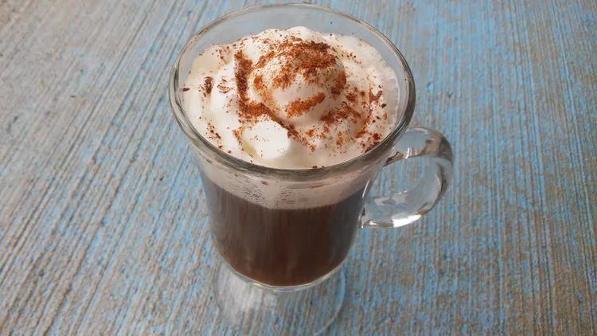

Home
Mexican-style Coffee

Description
Mexican-style coffee is a rich and flavorful beverage made with hot coffee, coffee liqueur, and tequila. It is typically topped with whipped cream and garnished with a sprinkle of cinnamon and cocoa powder, creating a delightful and warming drink perfect for any occasion.
Ingredients
- 4 fluid ounces hot brewed coffee
- 1 fluid ounce coffee liqueur
- 1 fluid ounce tequila
- 1 tablespoon whipped topping
- 1 pinch ground cinnamon, for garnish
- 1 pinch cocoa powder, for garnish
Steps
- Pour the coffee into a mug.
- Stir in the coffee liqueur and tequila.
- Garnish with whipped topping, cinnamon, and cocoa powder.